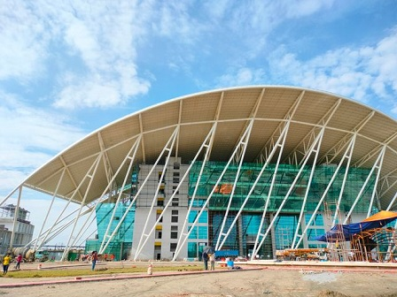
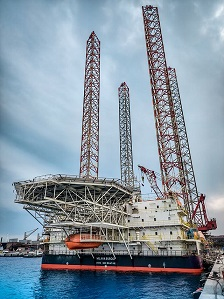
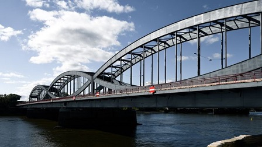
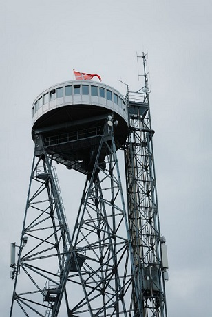
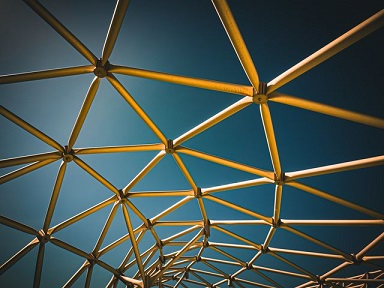
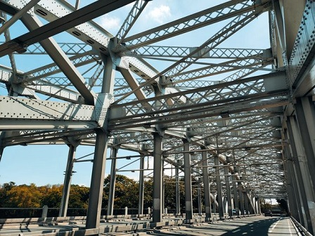
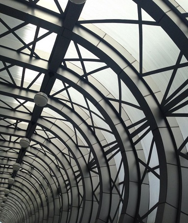
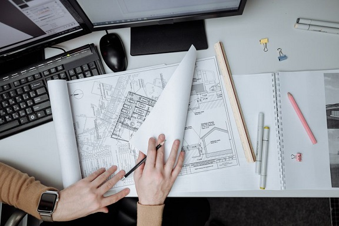
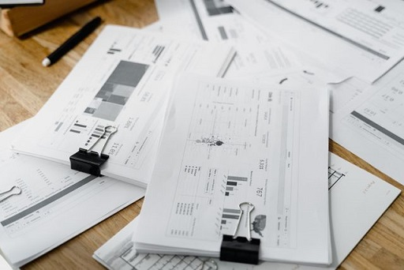

Complete Steel Structural Design and Detailing Solutions
Complete Design, Analysis, 3D Modelling, and Detailing Solutions for All Types of Steel Structures involved in Industrial, Commercial, Residential, Infrastructure, and Offshore Sectors.
Why to hire a full time structural engineer if you need design services occasionally....
Just try our fast, cheap and accurate design services....
Services Provided

# Complete Design and Analysis of Pre-Engineered Buildings (PEBs) such as Industrial Sheds, Warehouses, Cold Storage Facilities, Factories, and Clear-Span Sports Complex Structures

# Design and Detailing of Offshore Structures including Oil & Gas Platforms, Marine Decks, Jacket Structures, Heliports, and Specialized Offshore Equipment Frameworks

# Design and Detailing of Heavy Steel Structural Erections such as Bridges, Footbridges, Pedestrian Decks, Walkways, Access Platforms, Ladders, and Industrial Mezzanines

# High-Rise and Utility Tower Design including Telecom Towers, Transmission Line Towers, Pipe Racks, and Material Handling Conveyor Support Structures

# Advanced Structural Analysis using STAAD.Pro for Load Calculations, Wind/Seismic Analysis, Stress Distribution, and Structural Optimization

# Intricate Connection Design including Welded, Bolted, Moment, and Shear Connections with High-Precision Calculation Reports

# High-Fidelity 3D BIM Modelling using Revit and Tekla Structures for Clash Detection, Spatial Coordination, and Exact Material Estimates

# Creation of Accurate Shop Drawings and Fabrication Drawings for Assembly, Erection, Bolt Lists, and CNC Data Extraction

# Generation of Comprehensive Bill of Materials (BOM), Material Take-Offs (MTO), and Cutting Lists to Minimize Field Waste
# 2D to 3D Structural Conversion, Redrafting, and Legacy Data Migration into Tekla or Revit Formats
# PDF/Hand Rough Sketch to AutoCAD Structural Drawing Conversion
Frequently Asked Questions
What types of steel structures do you design and analyze?
Susilya offers comprehensive design and analysis for diverse sectors. Our expertise includes Pre-Engineered Buildings (PEBs) like industrial sheds and warehouses, offshore oil and gas platforms, heavy structural erections like bridges, and utility tower designs including telecom towers, transmission lines, and conveyor support frameworks.
Which engineering software do you use for structural analysis?
We perform advanced structural analysis using STAAD.Pro to calculate load configurations, wind forces, and seismic impacts. This software ensures precise stress distribution evaluation and structural optimization. For high-fidelity 3D BIM modeling, clash detection, and coordination, we utilize industry-standard Tekla Structures and Revit software.
Do you provide detailed connection design and shop drawings?
Yes. We develop intricate connection designs, including welded, bolted, moment, and shear connections, backed by high-precision calculation reports. We deliver accurate shop and fabrication drawings containing structural assembly data, erection blueprints, bolt lists, and CNC data extraction parameters for flawless on-site manufacturing.
How do your structural detailing services minimize material waste?
Our detailing process generates comprehensive Bills of Materials (BOM), precise Material Take-Offs (MTO), and optimized cutting lists. By mapping accurate components within Tekla and Revit during the 3D modeling phase, we drastically reduce fabrication errors and field waste during steel structural erection phases.
Can you convert legacy data or rough sketches into CAD drawings?
Yes. We specialize in legacy data migration, 2D to 3D structural conversion, and redrafting into Tekla or Revit formats. Our drafting team quickly converts PDF files and hand-drawn rough structural sketches into clean, accurate, and production-ready AutoCAD structural drawings tailored to your projects.